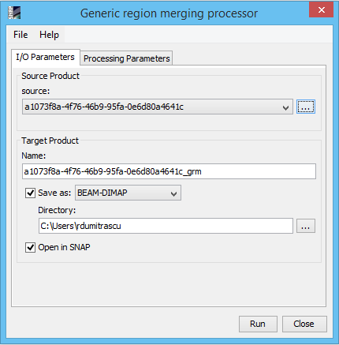
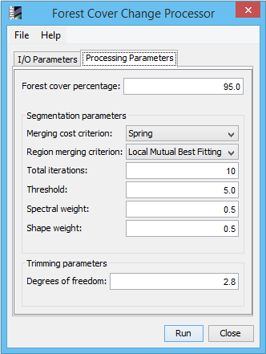

| Forest Cover Change Processor | |
The Forest Cover Change Processor is a multi-steps iterative process that transform two date images into one forest change product. The overall principle of the algorithm is to identify the forest objects showing higher reflectance differences between the two images than the other forest objects.
The memory required to process the images may be very high and therefore leads to unfeasibility on slow computers.
The two major steps are:
(i) a multi-date multispectral image segmentation and
(ii) a change detection procedure including:
- a binary forest/non forest classification of the clusters composed of a selection of forest training set based on a reference map, a multivariate iterative trimming to remove the outliers, and a spectral analysis based on the Mahalanobis distance;
- a change detection under a forest mask generated by the union of forest classification of both dates.
The processing chain is run by pairs of images. Each product must contain at least 4 bands with the following spectral wave length:
RED: 0.63 µm - 0.69 µm
NIR: 0.76 µm - 0.9 µm
SWIR: 1.55 µm - 1.75 µm
SWIR: 2.08 µm - 2.35 µm
Forest masks are produced in two major steps:
(i) A forest training set is created with the objects covered by a percentage (95% by default) of Tree cover class extracted from a reference map (by default CCI Land Cover Map) (originally CCI Land Cover map):
- Segmentation objects are first converted into raster pixels.
- Tree cover label from recent and old images objects rasterized (same objects for both dates) are extracted from the reference map. For the CCI Land Cover legend, Tree Cover labels are [40, 50, 60, 61, 62, 70, 71, 72, 80, 81, 82, 90, 100, 110, 160, 170].
- Areas statistics are then computed and objects with at least 95% (be default, the percentage can be modified) Tree cover are selected for the forest/non forest mask training set. This method allows to have set of homogeneous tree cover objects.
(ii) The training set will be updated using the a trimming procedure based on the Mahalanobis distance to remove the extreme values that behave like outliers with a threshold based on the chi distribution algorithm with 3 levels of confidence 0.9, 0.95 and 0.99. The trimming is done repetitive on smaller windows using the method of moving window algorithm (a small window that moves to cover the hole image and overlaps itself over a portion on both directions) so that the overall result is more precise.
Source ProductsCurrent Source Product Specify the current source product which will be used to compute the forest cover change. The current source product represents the most current product by date. Previous Source Product Specify the previous source product which will be used to compute the forest cover change. The previous source product represents a product that is older than the current source product. NOTE: The two input products must have the same geo-spatial latitude and longitude and the same raster sizes. The two source products must be from the same period of the year for a more precise result. Target ProductName: Used to specify the name of the target product.
Save as:
Used to specify whether the target product should be saved to the file system. The
combo box presents a list of file formats.
The text field allows to specify a target directory. Open in SNAP: Used to specify whether the target product should be opened in the Sentinel Toolbox. When the target product is not saved, it is opened in the Sentinel Toolbox automatically. |
 |
|
Forest cover percentage: Specify the forest cover percentage for each segmentation object. It represents the percent of pixels from a segmentation object that are marked as forest in the CCI Land Cover map. Merging cost criterion: Specify the type to compute the cost between adjacent segments. The merging costs are based on a homogeneity criterion and can represent not only how two similar segments are but also how homogeneous the resulting larger segment would be. Region merging criterion: Specify for a given segment the way to choose the adjacent segment to be merged with. Total iterations: Specify the total number of iterations. The higher the number of iterations, the lower the number of segmentation objects is. On a segmentation step the number of segmentation objects may be reduced by merging the adjacent segments based on the merging cost criterion and region merging criterion. Threshold: Specify the threshold which is compared with the merging cost. This threshold avoids undersegmentation. The higher the value of the threshold the least chances of undersegmentation. Spectral weight: Specify the spectral weight. Shape weight: Specify the shape weight. Name : Specify the name of the Land Cover Map to be used from a list of land cover maps integrated in the application. The default land cover map is CCI Land Cover map Map Indices: Specify the indices from the selected land cover map, to be used as a mask of forest for the Forest cover change processor. An example is: 40, 50, 60, 61, 62, 70, 71, 72, 80,81, 82, 90,100, 110,160, 170. All indices must be integers and separated by a comma. NOTE: The indices field must not be empty. Recent Date Product Mask and Previous Date Product Mask: Specify a raster mask to be added to the target product. If no masks are introduced and the input products are of type sentinel 2, the output product will be influenced by scl_dark_feature_shadow, scl_cloud_shadow, scl_water, scl_cloud_low_proba, scl_cloud_medium_proba, scl_cloud_high_proba, scl_thin_cirrus, scl_snow_ice masks from the source products in order to reduce the false positives from the output. NOTE: Input mask must be a binary raster with one band. Degrees of freedom: Specifies the degrees of freedom for the chi distribution algorithm. The smaller the value, the more segments are eliminated on the trimming process. NOTE: The threshold, spectral weight and shape weight may vary according to the pixel values of the raster. The standard values for spectral weight and for shape weight is 0.5 and for threshold is 100. Sometimes, to detect more precisely the segmentation objects, the processor needs to self-execute several times with different parameter values. |
 |